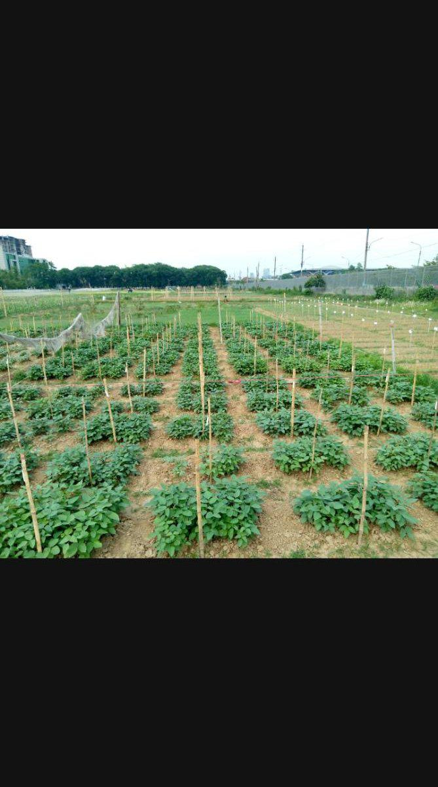

Blackgram performance rarely stays stable across locations and seasons. Genotype × environment interaction can change which lines look "best," so selecting from a single site is risky for farmers who face drought, excess rain, or late sowing.
We evaluate promising lines across at least two locations and two seasons when resources allow. Plots are randomised within blocks; border rows reduce edge effects. Core traits include days to flowering, plant height, pods per plant, seeds per pod, 100-seed weight, and visual scores for disease and insect damage.
Instead of ranking by yield alone, we combine yield with stability and stress tolerance. Simple weighted indices keep decisions transparent for students and collaborators. Lines that hold rank across environments move forward for further testing or crossing.
Multi-environment data costs more time in the field, but it saves years of promoting genotypes that only shine under ideal conditions. For Bangladesh's variable climate, stability is part of the breeding target.